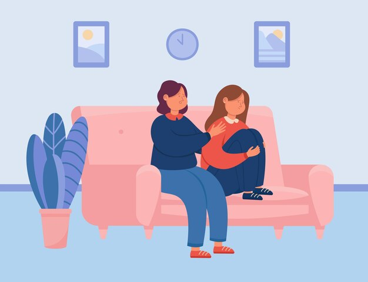

Types Of Programs
Age Group 10-13
Therapy for the 10-13 age group is crucial as it addresses the unique emotional and developmental challenges faced by pre-teens, including identity formation and peer relationships. This specialized therapy helps children navigate the transition from childhood to adolescence, providing them with tools to manage stress, build self-esteem, and communicate effectively. Engaging in therapy during this formative period can also prevent or mitigate issues related to anxiety, depression, and behavioral problems. By offering a supportive environment tailored to their needs, we empower young individuals to develop healthy coping strategies and emotional resilience that will benefit them throughout their lives. |
Age Group 14-18Therapy for the 14-18 age group is essential as it helps teenagers navigate the complexities of adolescence, including identity formation, academic pressures, and evolving social dynamics. This phase of life is marked by significant emotional and psychological changes, making it crucial to address issues such as anxiety, depression, and self-esteem with appropriate therapeutic interventions. Individual and group therapy tailored for this age group provides a safe space to explore their feelings, develop coping skills, and build resilience. By offering targeted support during these critical years, we help teens build a strong foundation for their mental health and overall well-being as they transition into adulthood. |